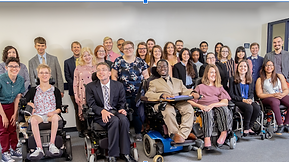
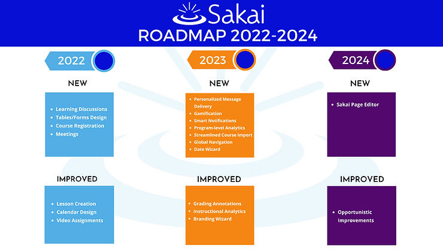

Where is Sakai going from 2022 to 2024?

Mar 24, 2021
1 min read
The Sakai Community's new three-year strategic roadmap steers the ongoing, energetic, rapid innovation that is the hallmark of the Sakai LMS. This new plan builds upon Sakai’s track record of market leadership in higher education, as evidenced by independent survey research and market data. It prioritizes the development of teaching technologies that increase design flexibility for faculty and enable greater learning outcomes for students.
Adopted in January 2021 by Sakai Community institutions, this roadmap guides our innovation in response to faculty and student needs and highlights the impact that can be made by an energetic community leveraging an open platform.
